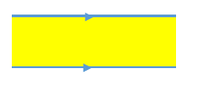
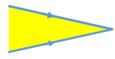
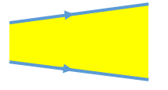
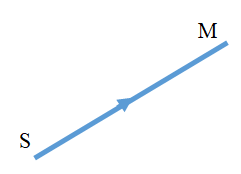
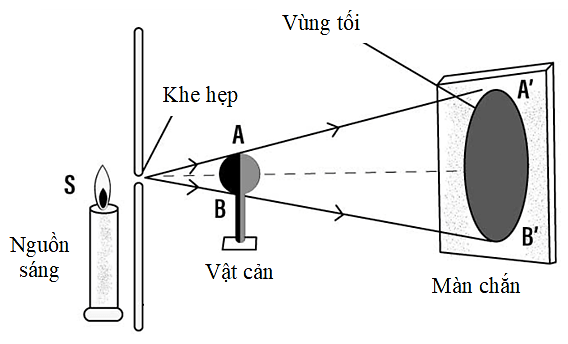
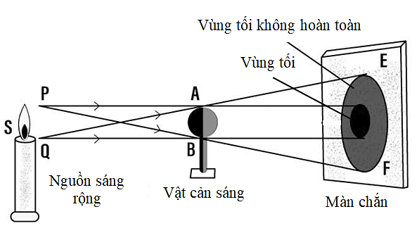

I. Ánh sáng là một dạng của năng lượng
Ánh sáng không thể thiếu trong cuộc sống của con người và các sinh vật trên Trái Đất.
Ví dụ:
- Ánh sáng giúp con người nhìn thấy môi trường xung quanh.
- Cây cối cần ánh sáng để quang hợp.
Ánh sáng là một dạng năng lượng và có thể chuyển hóa thành các dạng năng lượng khác như nhiệt năng, điện năng,...
Ví dụ:
II. Chùm sáng và tia sáng
1. Chùm sáng
Ánh sáng phát ra từ nguồn sáng và truyền trong không gian thành các chùm sáng.
Có ba loại chùm sáng thường gặp:
- Chùm sáng song song.
- Chùm sáng hội tụ.
- Chùm sáng phân kì.



2. Tia sáng
Tia sáng là đường biểu diễn đường truyền của ánh sáng bằng một đoạn thẳng có mũi tên chỉ hướng truyền.
Ví dụ: Đoạn thẳng SM có mũi tên biểu diễn một tia sáng.

3. Chùm sáng hẹp song song
Trong thực tế, một chùm sáng song song rất hẹp được coi là mô hình của một tia sáng.
III. Vùng tối
1. Vùng tối do nguồn sáng hẹp
Phía sau vật cản sẽ có vùng hoàn toàn không nhận được ánh sáng từ nguồn sáng truyền tới, gọi là vùng tối.
Vùng tối do nguồn sáng hẹp có ranh giới rõ ràng với vùng sáng.

2. Vùng tối do nguồn sáng rộng
Phía sau vật cản có:
- Vùng tối hoàn toàn.
- Vùng nửa tối (vùng tối không hoàn toàn), chỉ nhận được một phần ánh sáng.
Ranh giới giữa vùng sáng và vùng tối không rõ rệt.

Ghi nhớ
- Ánh sáng là một dạng năng lượng.
- Có ba loại chùm sáng: song song, hội tụ và phân kì.
- Tia sáng biểu diễn đường truyền của ánh sáng.
- Nguồn sáng hẹp tạo vùng tối rõ ràng.
- Nguồn sáng rộng tạo vùng tối và vùng nửa tối.